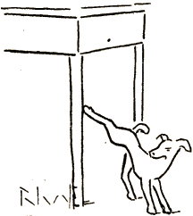

Ekzistas homoj, kiuj povas sidi tutajn horojn en kafejo trinkante nur... kafon.
Vivanta vaz' de nostalgi'
Kaj sklav' de l' etimologi',
Vi en kafejo mendas ... kafon.
Vin hezitigas nur dilem':
„ Ĉu kremokaf'? ― Ĉu kafokrem'? “
Prefere mendu vinkarafon,
Kremkaful'!

Vi, kremvizaĝ', kafkarakter',
Pri ĉio grumblas: Pri l' veter',
Pri politik' kaj mia pipo,
Vi grumblas eĉ, ĉar hundo ur...
...inetis kontraŭ tablokrur',
Aŭ grumblas simple... pro principo!
Kremkaful'!
Neniam suka farspetol'
Nek improviza farandol'
En siaj sulkoj vin kuntrenas;
Per pruda „ sed “, ― per ruza „ se “
Vi kaŝas vin de ŝercide',
Ĉar tio... „ dece ne konvenas! “
Kremkaful'!
Vi tiel do en trinkbutik'
La rolon ludas kun cinik'
De farizeo en la templo,
Kaj des pli mi malamas vin,
Ke pala abstinad-doktrin'
Al mi proponas vin ekzemplo!
Kremkaful'!
En oficej' aŭ en salon'
Vi eble estas ĉefperson'
Kaj mi respekte vin salutas,
Sed en trinkej', kafarda gast',
Vi kreas ĝenon de kontrast'
Kaj lastinstance mi atutas:
„ Kremkaful'! “